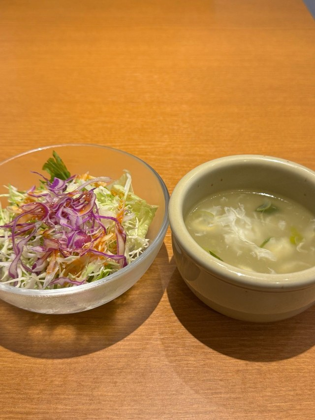
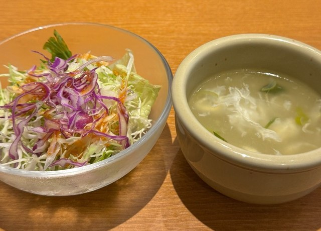
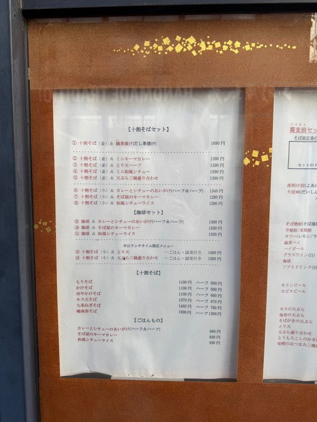
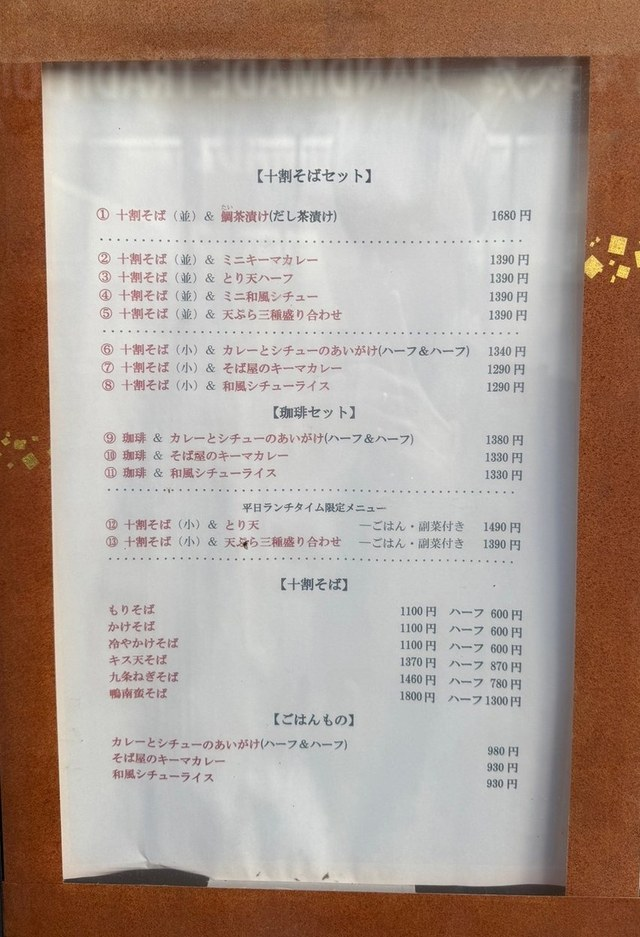

BEFORE

KEY'S CAFÉ で確立した構図ルール（壁・天井・床・テーブルなど「何もない面」が大きく写り、被写体が小さくなっている写真は、被写体が主役になるようズーム切り抜きする）を過去記事にも徹底する第2パス。前回「保留（判定不能）」だった13枚と「不適用」とした構図候補15枚、計28枚を原寸で再確認した。新たに切り抜いたのは2枚。残り26枚は、被写体が既に十分大きい／外観で立地の文脈が要る／切り抜くと価格・営業時間などの根拠の文字が欠ける、のいずれかで不適用のままにした。左が元、右が修正後。


元の写真は上下に何もないテーブル面が約55%（上約37%＋下約18%）を占め、器が中央の帯に小さく写っていた。器の帯に寄せて上下を切り、器が画面いっぱいになるようにした。記事：Fukagawatei, Kiyosumi-Shirakawa。


メニュー紙面の周りをコルクボードの余白が50%以上占めていた。主メニュー1枚に寄せて切り抜き、十割そばセット①〜⑬・珈琲セット・十割そば・ごはんものの価格はすべて欠けずに残した（右端の2枚目は元から半分しか写っていないもので、切り落としは許容）。記事：Marebito, Jimbocho。